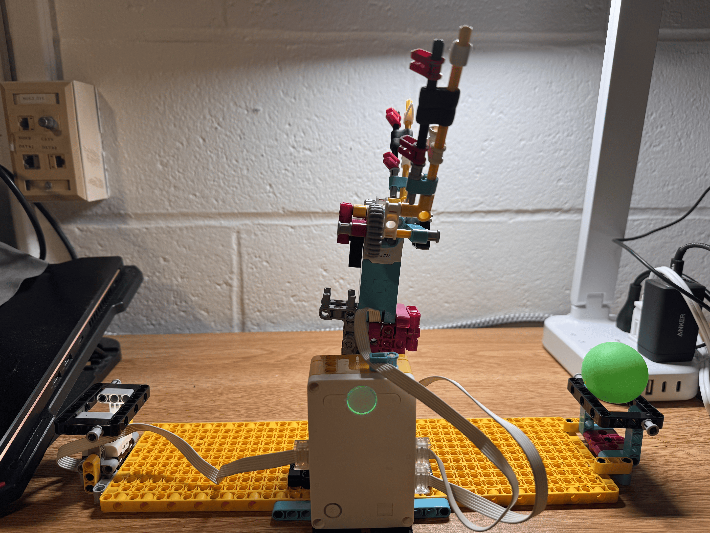

This project was about designing a mechanism to move a pingpong ball from one location to another. I decided to follow through with the idea of a robot arm that was suggested by the project title. My inital thoughts came up with a arm that had 2 degrees of freedom, one for the pivot and one for the gripper. After some prototyping and looking at the design of my peers, I decided to go with a design for the gripper that involved a single motor that would spin two shafts on opposite ends of the motor end with a small gear on both sides that also meshed into another gear at a right angle. The other gear on both sides drove two long pincers that hand four brongs facing inwards. The mechanical design was relatively simple and fairly structurly sound, but I wanted to experiment and limit test with the programming.
I came up with the idea to use a finite state machine in order to control the robot arm, since it could be simplified into a series of actions that changed depending on the conditions (the color sensor detecting the ball). I tried to break up everything into a switch case statement system with each indivdual "state" being a case and having a representative enumerator that would be used to switch between the cases after the method being called (the state action) was completed. I had to change this approch to just a chain of if elseif statements since I wasn't very familiar with how python handled enumerators and switch statements, so instead I assigned variables with the name of the state and a number to represent it. Besides that, I used the motors run to absolute position method to move the pivot and grip, specifically for the piviot to counter the force of gravity and make sure the arm could stand up on its own without falling over. This came about only after I tried to create a PID controller only with PD in order to control the piviot, but I came across unsual bugs that I couldn't figure out how to fix, such as the motor contionuously rotating in the same direction even after reaching the set point instead of oscillating and settling down. I also implemented a delay system for the color sensor to make sure that it was detecting the ball correctly instead of just a single reading, which would have been unreliable from my previous experience with other color sensors.
# Setup: pivot motor on A, gripper motor on C, Color Sensor on D.
from hub import port
import motor
import runloop
import color
import color_sensor
# Give each state a distinct name and value.
class State:
INITIALIZE = 0
WAIT_FOR_BALL = 1
MOVE_TO_PICKUP = 2
CLOSE_GRIPPER = 3
MOVE_TO_DROPOFF = 4
OPEN_GRIPPER = 5
RETURN_TO_HOME = 6
# Set the motor encoder positions for your arm.
HOME_POSITION = 0
PICKUP_POSITION = 90
DROPOFF_POSITION = 280
GRIPPER_OPEN_POSITION = 150
GRIPPER_CLOSED_POSITION = 10
# Set the motor speeds in degrees per second.
PIVOT_SPEED = 200
PIVOT_HOME_SPEED = 160 * 2
GRIPPER_SPEED = 100
# The ball must be detected continuously for this long.
DETECTION_TIME_MS = 1000
SENSOR_CHECK_DELAY_MS = 10
async def main():
# Begin by moving the arm and gripper to their starting positions.
state = State.INITIALIZE
# Keep running the state machine.
while True:
if state == State.INITIALIZE:
# Open the gripper, then move the arm to its home position.
await motor.run_to_absolute_position(
port.C,
GRIPPER_OPEN_POSITION,
GRIPPER_SPEED,
stop=motor.HOLD
)
await motor.run_to_absolute_position(
port.A,
HOME_POSITION,
PIVOT_HOME_SPEED,
stop=motor.HOLD
)
# Start waiting for a ball.
state = State.WAIT_FOR_BALL
elif state == State.RETURN_TO_HOME :
await motor.run_to_absolute_position(
port.A,
HOME_POSITION,
PIVOT_SPEED,
stop=motor.HOLD
)
state = State.WAIT_FOR_BALL
elif state == State.WAIT_FOR_BALL:
# Count only consecutive checks where the sensor sees a color.
detected_ms = 0
while detected_ms < DETECTION_TIME_MS:
if color_sensor.color(port.D) != color.UNKNOWN:
detected_ms += SENSOR_CHECK_DELAY_MS
else:
detected_ms = 0
# Pause between checks so the program can run other tasks.
await runloop.sleep_ms(SENSOR_CHECK_DELAY_MS)
# A color was detected continuously for the required time.
state = State.MOVE_TO_PICKUP
elif state == State.MOVE_TO_PICKUP:
# Move the arm to the pickup position.
await motor.run_to_absolute_position(
port.A,
PICKUP_POSITION,
PIVOT_SPEED,
direction=motor.CLOCKWISE,
stop=motor.HOLD
)
# Close the gripper around the ball.
state = State.CLOSE_GRIPPER
elif state == State.CLOSE_GRIPPER:
# Move the gripper to its closed position.
await motor.run_to_absolute_position(
port.C,
GRIPPER_CLOSED_POSITION,
GRIPPER_SPEED,
direction=motor.COUNTERCLOCKWISE,
stop=motor.HOLD
)
# Continue to the drop-off position.
state = State.MOVE_TO_DROPOFF
elif state == State.MOVE_TO_DROPOFF:
# Move the arm to the drop-off position.
await motor.run_to_absolute_position(
port.A,
DROPOFF_POSITION,
PIVOT_SPEED,
direction=motor.COUNTERCLOCKWISE,
stop=motor.HOLD
)
# Open the gripper to release the ball.
state = State.OPEN_GRIPPER
elif state == State.OPEN_GRIPPER:
# Open the gripper.
await motor.run_to_absolute_position(
port.C,
GRIPPER_OPEN_POSITION,
GRIPPER_SPEED,
direction = motor.CLOCKWISE,
stop=motor.HOLD
)
# Return to waiting for another ball.
state = State.RETURN_TO_HOME
runloop.run(main())